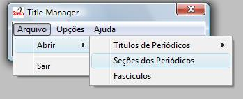
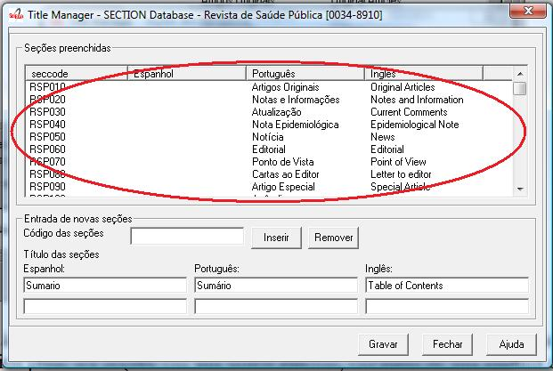
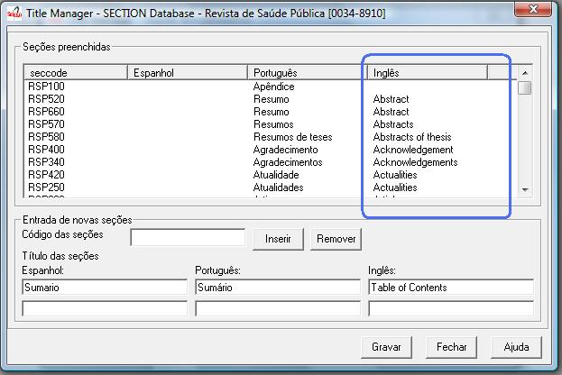
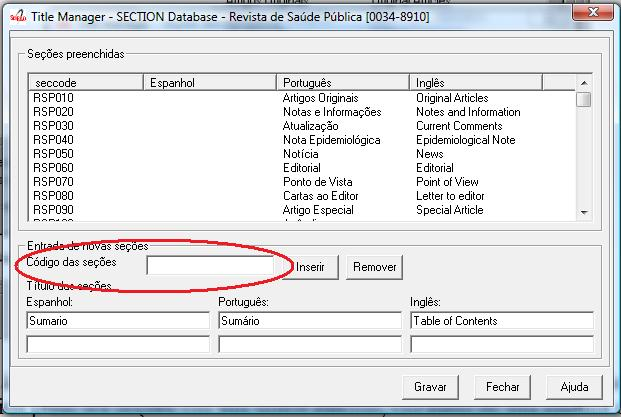
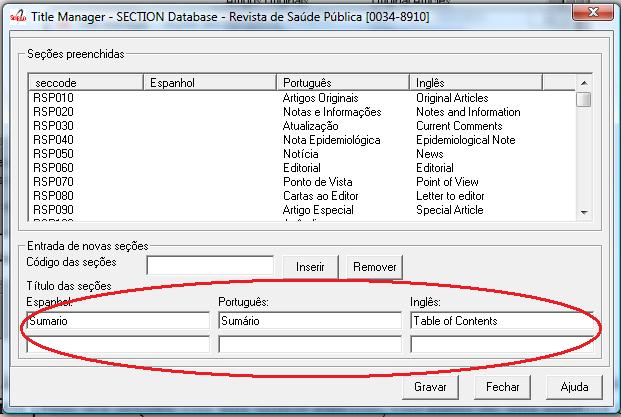
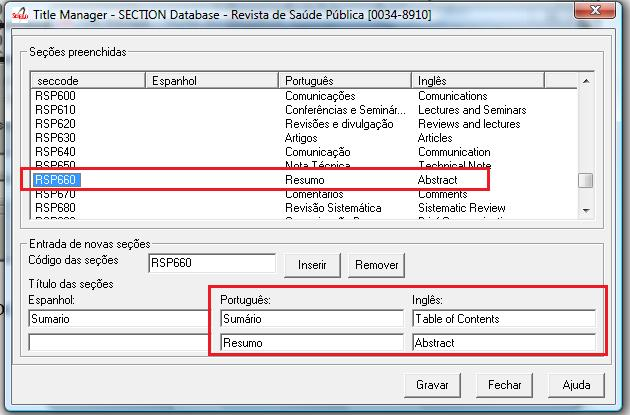
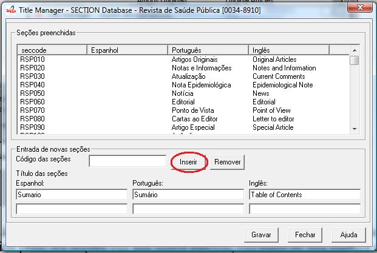

It manages all the sections of the table of contents of the all the journal issues.
Select File-> Open-> Sections

Select a title and click on Open button
As opening the form, it will be presented a screen with four columns:
- Seccode (code sections)
- titles of the section in Spanish
- titles of the section in Portuguese
- titles of the section in English
The code of sections are formed by the Journal acronym, followed by 010, or 020, or 030, and, so on.
The title of the sections may or not be in all the languages of the interface.
Fig 1a - List of sections of the journal
The list can be rearranged, by clicking on any column. For example, clicking on code column, the list will be sorted by code.
Fig 1b - List of sections, ordered by the English column
1. Register the section code according to the acronym format, followed by 010, or 020, or 030, and successively.
Figure 2 - Field to enter the section code
Register the fields for section title
Figure 3 - Fields to enter the section titles
Click on Insert button
Click on Save button
Click on the line of the section to edit. Code and section titles go to the fields.
Figure 4 - selected section to edit or delete
Edit the section titles
Click on Insert button
Figure 5 - Insert button
Click on Save button
Click on the line of the section to be deleted. Section code and titles will go to their fields.
Figure 6 - selected section to edit or delete
Click on Remove button
Figure 7 - Remove button
Click on Save button
NOTES:Only after clicking on the Save button, the record will be up to date with all the changes.It is allowed to change only the sections which are not in use.Figure 8 - Buttons: Save, Close, Help
ISIS Base. A record by title. Each record contains the following tags:
| tag | |
| 035 | ISSN. Corresponds to the field of 400 of TITLE |
| 048 subfield l | Language of table of contents’ header |
| 048 subfield h | title for table of contents’ header (Table of contents (en), Sumario (pt), Tabla de Contenido (es)) |
| 049 subfield c | code of the section |
| 049 subfield l | language of the section |
| 049 subfield t | title of the section |
| 091 | Date ISO to register the update date |
| 100 | Journal’s title. Corresponds to the same field of TITLE. |
| 930 | Journal’s acronym in uppercase |